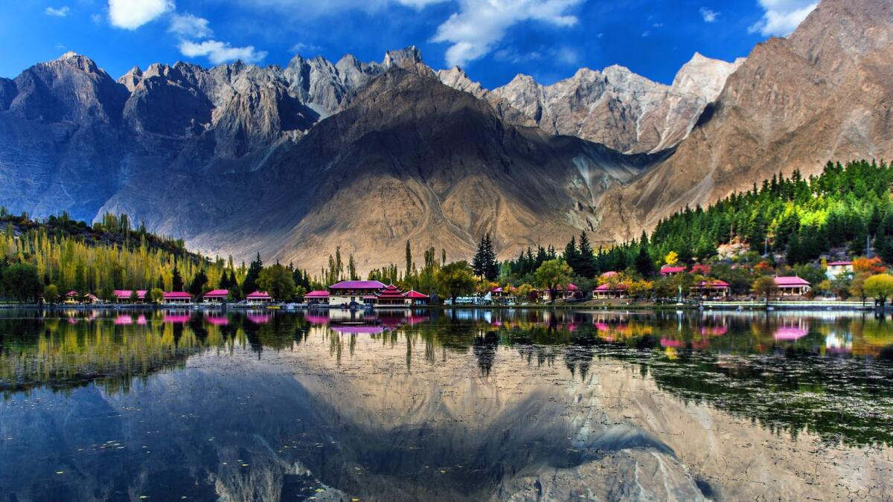

Skardu
Attractions
Shangrila Resort
Also known as "Heaven on Earth," this resort is situated on the banks of Lower Kachura Lake and offers mesmerizing views of the surrounding mountains and crystal-clear waters.
Baltoro Glacier
One of the largest glaciers outside the polar regions, Baltoro Glacier is a trekker's paradise, with stunning vistas of snow-capped peaks and ice formations.
Activities
Trekking and Hiking
Skardu is a gateway to some of the world's most renowned trekking routes, including the Baltoro Glacier trek and the trek to Concordia, where the world's highest peaks converge.
Rock Climbing
The rugged terrain around Skardu offers opportunities for rock climbing enthusiasts to test their skills and conquer challenging cliffs.
Cultural Sites
Buddhist Rock Carvings
Skardu and its surrounding areas are home to ancient Buddhist rock carvings, offering insights into the region's rich cultural history.
Shigar Fort
Located in the nearby town of Shigar, this centuries-old fort is an architectural marvel and a testament to the region's rich heritage.
Dining
Local Cuisine
Sample traditional Balti cuisine, which includes dishes like "Skardu Trout," yak meat dishes, and hearty soups like thukpa.
Street Food
Explore the local markets and indulge in street food delights such as samosas, pakoras, and kebabs.
Transportation
Air Travel
Skardu Airport serves as the main gateway to the region, with flights connecting it to major cities like Islamabad.
Road Travel
The Karakoram Highway provides a scenic road journey to Skardu, though it can be challenging due to its mountainous terrain.
Accommodation
Hotels and Guesthouses
Skardu offers a range of accommodation options, from luxury hotels to budget guesthouses, catering to different preferences and budgets.
Camping
For those seeking a more adventurous experience, camping under the stars is a popular option, with campsites available in scenic locations.